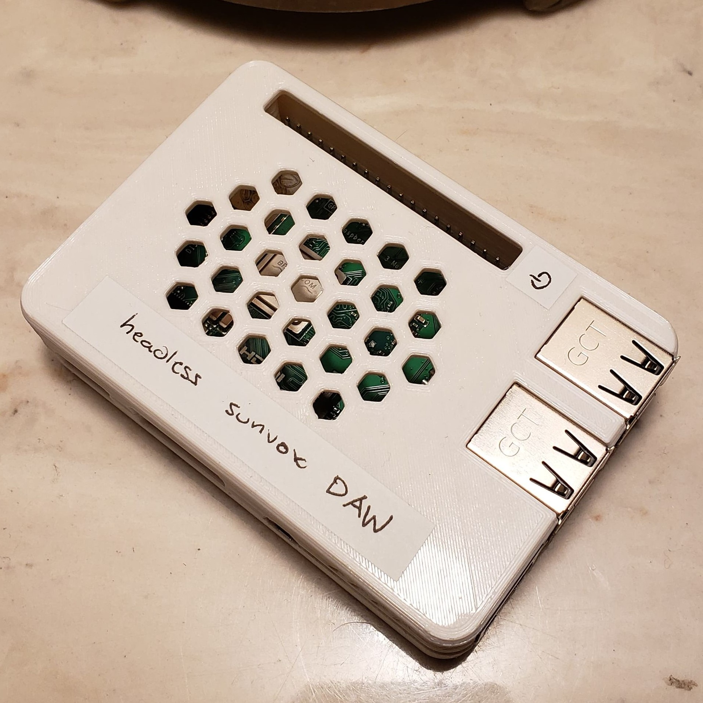
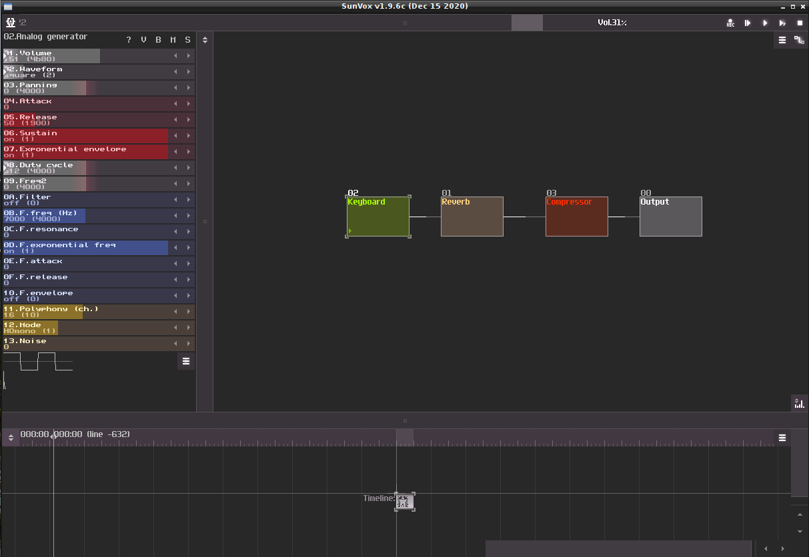
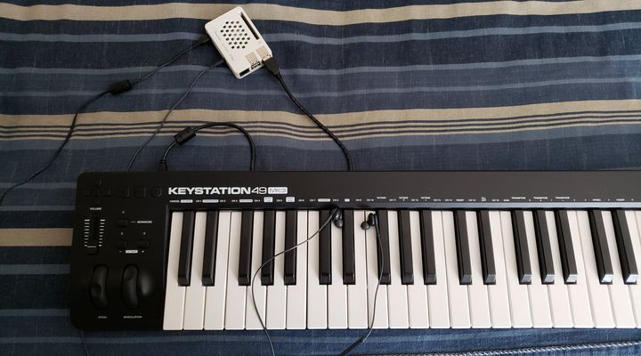

Turning My Keyboard Into a Synth
February 16, 2021
It’s getting into the 5th week of my last semester at Purdue now, and you know what that means – time to take way longer than I should to finish a project. Credit to Nicky Masso for this idea.
The basic concept is that I hate firing up Ableton if I only want to practice piano and not mess around with different sounds. The audio driver I use, ASIO4ALL, gives me lower latency than DirectX but takes over my computer and breaks any other audio streaming service like Spotify or Youtube in the process; it’s also slow to launch, requires me to take my laptop along if I want to bring my keyboard somewhere, and honestly has too many options. I don’t wanna have to think about settings sometimes!
The obvious solution is getting a real synth rather than a MIDI keyboard, but those are expensive and I value my time very little. My solution is relatively simple: install a DAW on a Raspberry Pi, then have it launch on boot (without a monitor attached) and load a predefined template for the MIDI input. That way I can just plug my keyboard into the Pi, power it on, plug my headphones in, and start playing – no interfaces to speak of.

Figure 1: A close-up of the final product
To properly allow for headless use of my keyboard, I would need a DAW (Digital Audio Workstation) to interpret the MIDI instructions coming from my keyboard and convert them to audio. My choice here was SunVox, primarily for its support of the Raspberry Pi 3B+’s ARMv8 processor (SunVox’s retro style and 16-bit synths are also just very pleasing). I configured a simple setup that would work for me comprised of an Audio Generator module piped through reverb and compressor modules before being output.

Figure 2: My SunVox configuration in their GUI
I bound the spare keys on my keyboard to functions like volume and switching synth waveform so I could make some on-the-fly changes without booting into the GUI. I then saved this project and set it as the default template with autorecover session enabled, such that it wouldn’t require any buttons to be clicked on boot – this is critical for the next step.
Next, I made SunVox launch on boot of the Pi. Now by default, the pi logs into a tty session when set to login on boot; however, what I want to do is launch an application with a GUI. In order to do this, I first need to start X, or the desktop session, then launch the application. It turns out that after much experimentation, this setup is relatively trivial to accomplish.
The basic process is as follows (I may be missing some steps I took here):
Install
tmuxsudo apt install -y tmux- Create a shell script somewhere that will be run on boot – mine is at
~/sunvox/startup.sh. Populate the file with the following:
#!/bin/bash startx tmux new-session -d -s sunvox '/<full>/<path>/<to>/sunvox_lofi'
Append the following to the end of
/etc/rc.localjust beforeexit 0:sudo ./<full>/<path>/<to>/startup.sh &
Now, when you start up your Pi it should start X and launch SunVox (YMMV). I also went ahead made the Pi broadcast its own Wi-Fi to allow connection from anywhere and added a clean shutdown service using the GPIO pins (see Adafruit’s GPIO Halt repo).
I’ll leave you with a final shot of the setup:

Figure 3: Everything all plugged in
Ciao